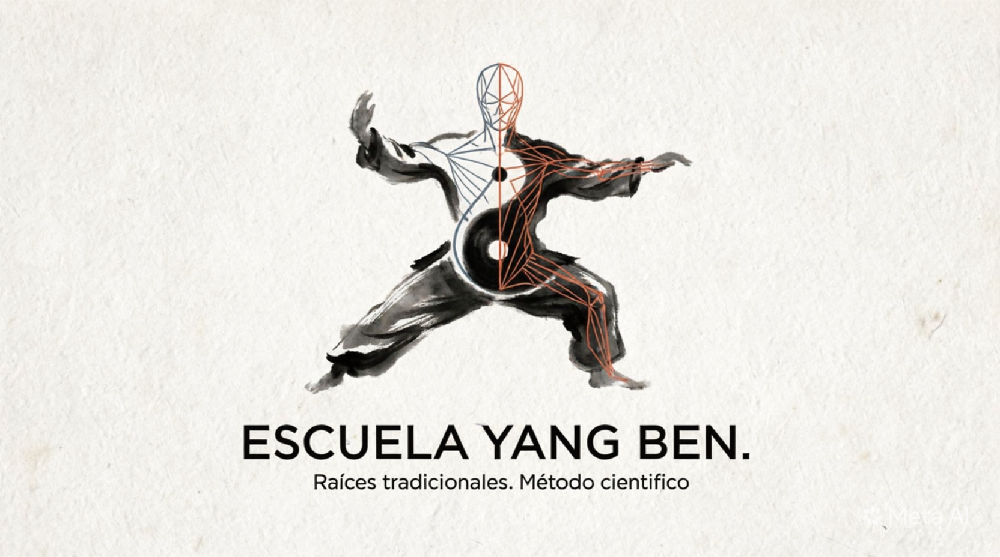

Bienvenidos
Más de 10 años compartiendo la tradición
En La Plata, Buenos Aires, Fernando Martín fundó la escuela Yang Ben para honrar a sus maestros y rescatar la sabiduría ancestral del marketing moderno

Escuela de Tai Chi Yang BenEn La Plata, Buenos Aires, Fernando Martín fundó la escuela Yang Ben para honrar a sus maestros y rescatar la sabiduría ancestral del marketing moderno